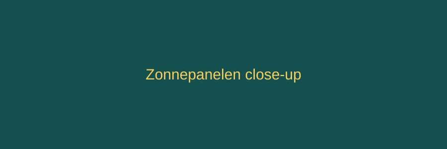

Onze diensten
Van dakscan tot installatie en onderhoud - alles onder een dak.

Installatie zonnepanelen
Complete installatie inclusief omvormer en montage, uitgevoerd door eigen monteurs.
Onderhoud en reiniging
Jaarlijkse controle en reiniging voor maximale opbrengst.
Thuisbatterij
Sla je opgewekte stroom op en gebruik hem 's avonds. Vraag naar de mogelijkheden.
Terug naar de homepage